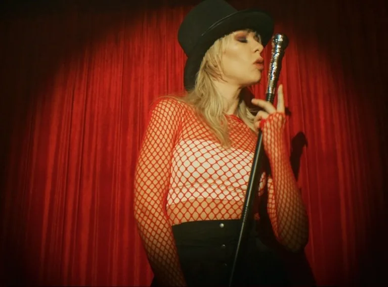

Побубним за видео · №1
Почему видео
с дорогой камеры —
хуже,
чем с айфона?
 LOG · СЫРОЙ ФАЙЛ
LOG · СЫРОЙ ФАЙЛ
Весь диапазон света — внутри.
Это негатив цифровой плёнки.
Айфон красит за вас — жёстко и навсегда
Камера отдаёт выбор вам
Проявка

LIFT
0.00 · 0.00 · 0.00
GAMMA
0.00 · 0.00 · 0.00
GAIN
0.00 · 0.00 · 0.00
контраст · цвет кожи · настроение кадра — половина киношности живёт здесь
Обучение · индивидуально · онлайн и очно
ПОБУБНИМ?
Научу снимать и красить
pobubnim.ru
занятие — от 3 000 ₽